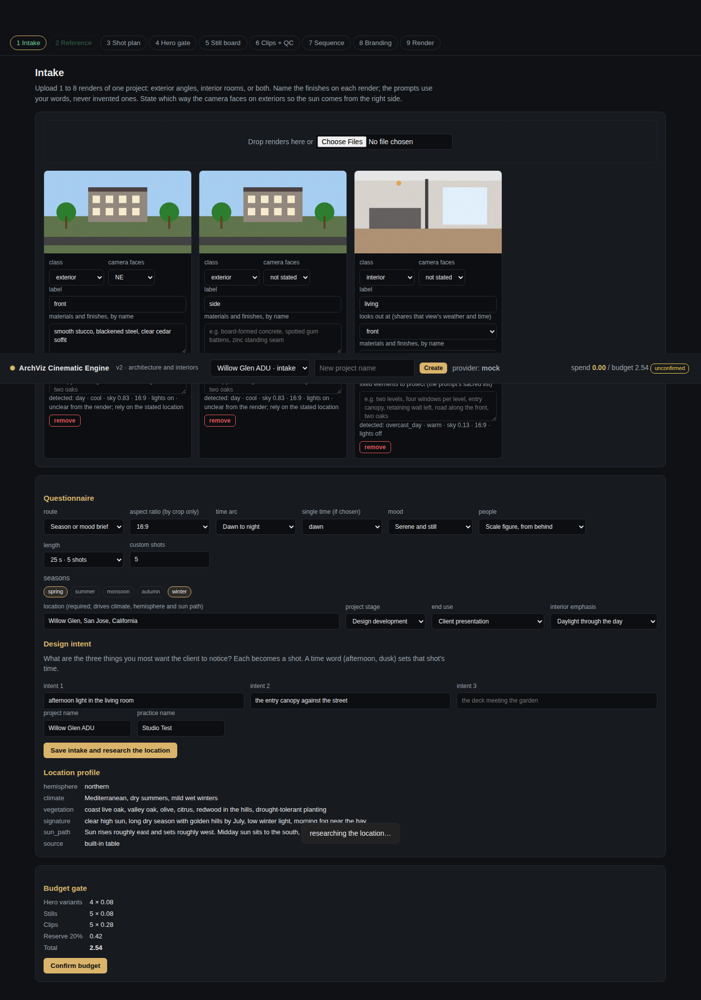
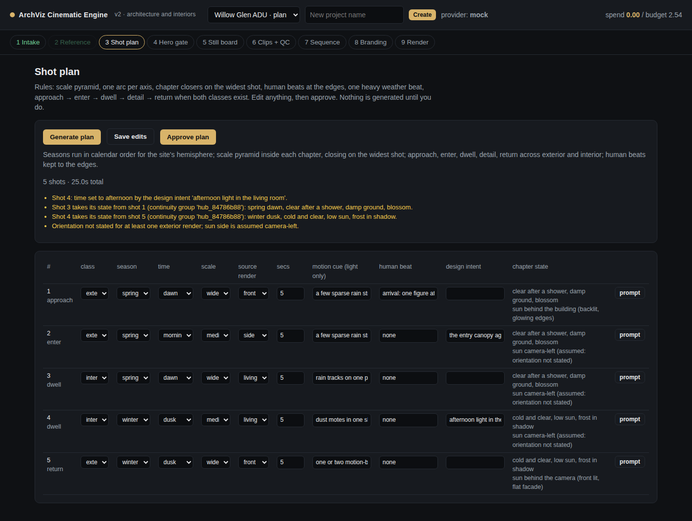
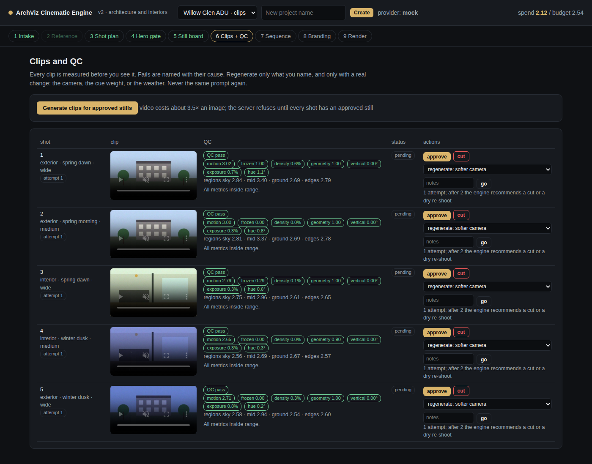
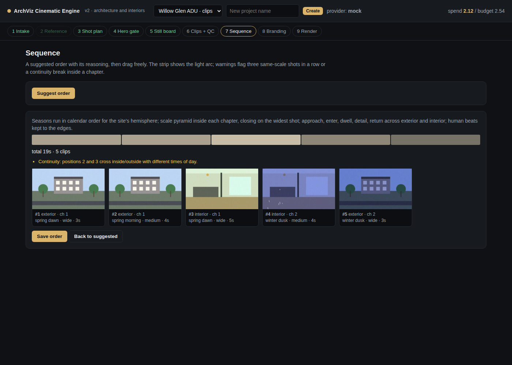
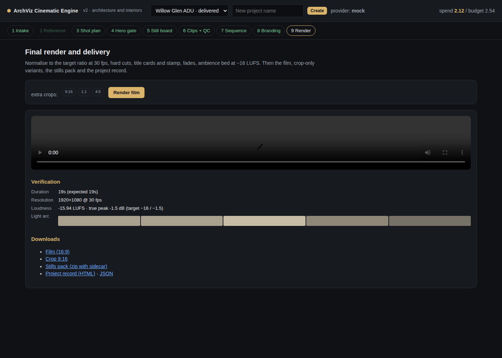

Turns an architect's or interior designer's renders into a short cinematic film across seasons, times of day and moods, without ever redesigning the building.
A practice sells design intent to homeowners, contractors, planning officers and awards juries.
Image models will happily invent a staircase, move a road, or rearrange a kitchen while changing the season. That is fine for a mood board and fatal for a client presentation. This engine treats the uploaded renders as the source of truth and changes only light, weather, season, occupancy and framing.
No added floors, moved walls, swapped finishes or rearranged furniture. Exteriors and interiors each get their own protected-element list.
Every generated image references an original upload. Nothing is ever generated from a previous generation, because drift compounds at each hop.
Every clip is scored on motion, frozen overlay, particle density, geometry drift, vertical lean and colour drift before you are shown it.
Sun direction is approximated from a stated compass heading. Every deliverable carries a disclaimer and an optional project-stage stamp.
Nine stages. You approve every one, and nothing expensive happens before you do.





| Route | What you give it | What it takes from that |
|---|---|---|
| Season or mood brief | Seasons, time arc, mood, location, end use | Builds the plan from the house rules and researched local climate |
| Reference film | A film whose style you want | Per-shot length, exterior/interior rhythm, scale changes, and a time arc from the shape of its light curve |
This is a Python service, not a static site.
git clone https://github.com/argaurshar/Images-to-video-with-ref-video cd Images-to-video-with-ref-video pip install -r requirements.txt ./run.sh # http://127.0.0.1:8000
That starts on the mock provider: generation is simulated locally and costs nothing, while the audit, the QC suite and the render all run for real. Rehearse a whole project before spending anything.
With Docker, which is also what the one-click deploy uses:
docker build -t archviz . docker run -p 8000:8000 -v archviz-data:/data archviz
For real generation, set ARCHVIZ_PROVIDER=freepik and FREEPIK_API_KEY. The key is read from the environment and never written to the repository or sent to the browser.